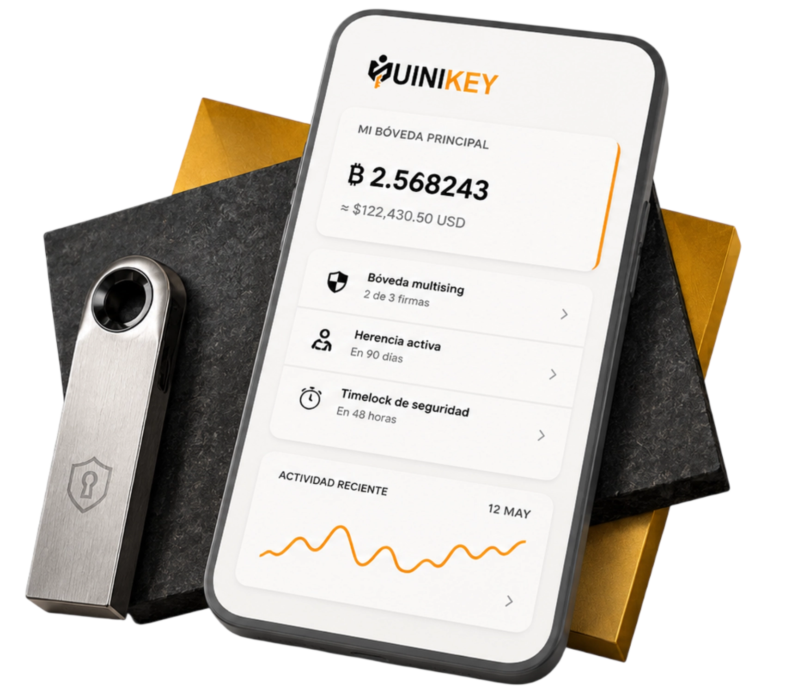

Toma el control total de tu Bitcoin: seguridad institucional, simplicidad de una app.
Crea bóvedas inteligentes con multifirma y planes de recuperación automática sin comprometer tus llaves privadas.
Multisig simplificado
Timelocks & herencia
Compatible Ledger · Trezor · Coldcard
Miniscript estándar
Sin registro. Sin custodia. 100% Bitcoin.
Tu privacidad es nuestra prioridad: nunca te pediremos tus 12/24 palabras.
Operamos bajo la regla de oro de Bitcoin: solo manejamos tus llaves públicas (xpubs). Tus fondos siempre permanecen bajo tu control total y fuera de nuestro alcance.

